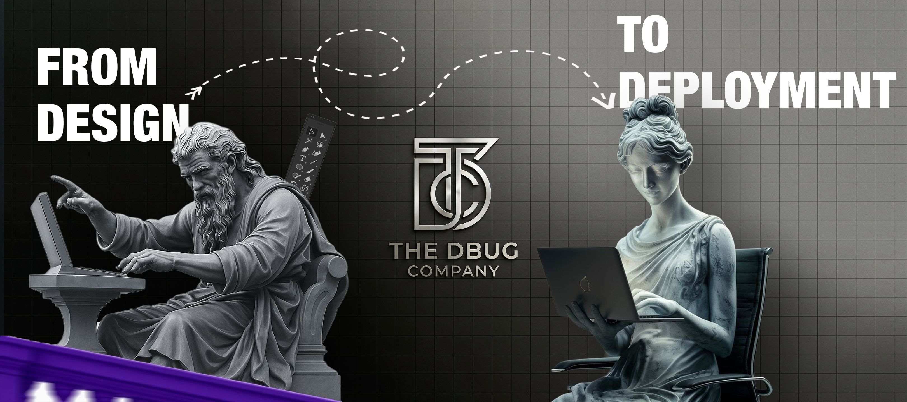

Logo Design · The DBUG Company
The DBUG Company
A company identity system for The DBUG Company. The logo is presented as a serious business mark with red as the accent color, supported by black and warm white for a sharp, confident brand presence.
Red
Black
Warm white
Primary company mark
The DBUG
Company
Company brand board

Company card
The DBUG Company
Brand stamp
DBUG
CO.
CO.